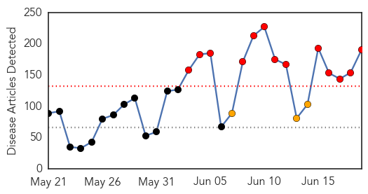
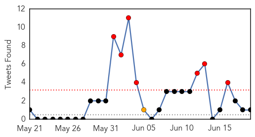
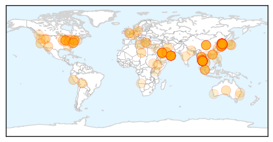
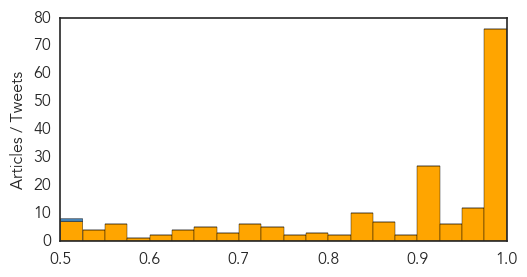

Toggle navigation
Early Warning
Daily Alerts
Unknown
Jun 19, 2015
Compare to:
-
Dengue Fever
Hemmorhagic Fever
Mold/Fungal Infection
Influenza
Meningitis
Pertussis / Whooping Cough
Middle East Respiratory Syndrome
Cholera
Hepatitis
Chikungunya
Yellow Fever
Bubonic Plague
West Nile Virus
Swine Flu
Ebola
Measles
Mumps
30 Day Trends
Web: 13
alerts
, 3
warnings
Twitter: 7
alerts
, 1
warnings
Top Articles:
Showing top 50 articles...
1.000
WHO chief voices optimism over S Korea MERS outbreak
0.999
Thai PM Urges Calm as MERS Case Confirmed
0.999
South Korea Says MERS Outbreak Shows Signs of Subsiding
0.999
S. Korea says MERS outbreak shows signs of subsiding
0.999
South Korea says MERS outbreak shows signs of subsiding
0.999
S. Korea says MERS outbreak shows signs of subsiding, AsiaOne Asia News
0.999
First MERS case confirmed in Thailand: public health minister
0.999
1st MERS case confirmed in Thailand
0.998
Confidence rises over MERS containment
0.998
South Korea at 24 Deaths, Thailand Confirms First Case
0.998
South Korean Official Says MERS Outbreak Seems to Be Easing
0.998
S. Korea Says MERS Outbreak Shows Signs of Subsiding — Naharnet
0.998
Confidence rises over MERS containment
0.998
Thailand confirms its first case of MERS, death toll rises to 24 in South Korea
0.998
South Korea says MERS outbreak shows signs of subsiding
0.998
South Korea says Mers outbreak shows signs of subsiding, Government & Economy
0.998
The World On Arirang
0.998
MERS outbreak levels off in S. Korea
0.998
Nation's First Mers Case Strikes
0.997
Tourist first MERS case in Thailand, news, Health News, AsiaOne YourHealth
0.997
Thailand’s first case of MERS confirmed
0.997
Mers virus: fears of further spread as Thailand confirms its first case
0.997
S. Korea Says MERS Outbreak Shows Signs of Subsiding
0.997
South Korea MERS outbreak subsides as new case reported
0.997
Omani businessman kept in Thailand hospital isolation as tests confirm MERS
0.997
No new patients from Samsung Medical Center-INSIDE Korea JoongAng Daily
0.997
Thailand says 175 exposed to MERS patient; South Korea reports no new case
0.996
MERS claims 24th victim in South Korea
0.996
5 break MERS quarantine to return to Japan ‹ Japan Today
0.996
The World On Arirang
0.996
Corrected count is three new MERS cases, three deaths
0.995
South Korea reports 20th MERS death
0.995
Mers in Thailand: First case of virus confirmed
0.995
Mers outbreak in South Korea shows signs of subsiding
0.995
WHO Says MERS Outbreak In South Korea Is Not A Global Emergency
0.995
Thailand Confirms 1st MERS Case, South Korean PM Apologizes for Slow Response
0.995
Thailand confirms first MERS case
0.995
Thailand confirms first MERS case
0.995
(LEAD) S. Korea reports another MERS death, one new case
0.995
South Korea says MERS outbreak shows signs of subsiding
0.994
CORRECTED-WRAPUP 2-Thailand took four days to confirm first MERS case; scores monitored
0.994
Omani MERS patient's relatives tested for virus in Thailand
0.994
Omani MERS Patient's Relatives Tested for Virus in Thailand — Naharnet
0.994
MERS spreads to Thailand By Reuters
0.994
Thailand confirms first MERS case
0.994
Thailand reports first confirmed case of Middle East Respiratory Syndrome, MERS, in 75-year-old man from Oman
0.994
Thailand took four days to confirm first MERS case; scores monitored
0.994
Omani MERS patient's relatives tested for virus in Thailand
0.994
Sudan Vision Daily
0.994
Thailand confirms first MERS case as virus spreads in Asia
Top Tweets:
0.508
Fayoum health confirms H5N1 bird flu case after test is positive from Ministry of Health
http://t.co/506V97S0sC
Web/News Articles

Tweets

Article Locations

Article Confidences
